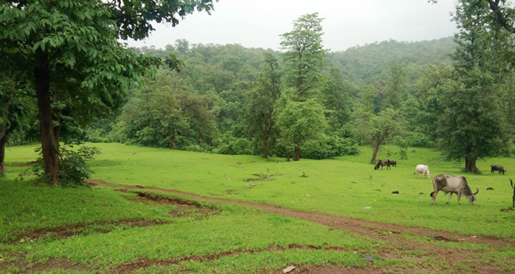

How to Get There?

By Road
The Nearest bus station is Vyara (20 kms).

By Train
Vyara - 20 kms.

By Air
The Nearest airport is Surat (130 kms). Ahmedabad (400 kms. Approximately)
The sanctuary area of 160.84 sq. km. is spread over an undulating terrain with rolling hills, plateaus, and small valleys of what are the western and northern limits of the Western Ghats. The area is drained by the beautiful river Purna, which lends name to the sanctuary. The area has other rivers and rivulets also. Unlike most of Gujarat, the area is characterised by moderate, sometimes even heavy, rainfalls with the average annual rainfall of 2500 mm. The area falls in the highest rainfall zone of the state. The forest, therefore, belongs to the category of tropical moist deciduous forests. The landscape is lush green, thick forests, interspersed with rivers, small tribal villages and scattered fields. The human population is totally tribal represented by Bhils, Warlis, Konkanas, Dubdas, and Kolchas etc. The forests support a rich tribal culture in the form of houses, dresses, jewelry, agriculture, fishing, musical instruments, folk dances etc. When the sun sets, one may listen to the distant sounds of folk dances, tribal songs and their improvised musical instruments Pavry and drums.
Located in the predominantly tribal district of Dangs, Purna Wildlife Sanctuary, which was declared as a sanctuary in July 1990, has the thickest forest cover in the state of Gujarat. The forests have lofty teak trees rising tall and straight in the company of other associated flora viz. sadad, timru, bamboos, khair, kalam, haldu, sisham (rosewood), salai, kadaya, killai, sevan, tanachh etc. The healthy stock of lofty bamboos specially attracts your attention.
'Mahal', the main village in the sanctuary is centrally located on the banks of river Purna. There is a very old forest rest house on the banks of this river. The place is the most preferred site for Nature Education camp.
